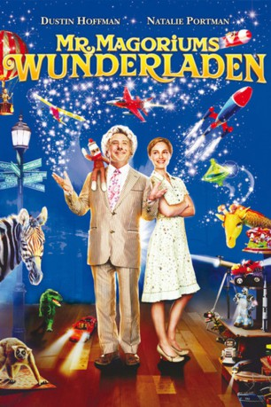

#4067 Mr. Magoriums Wunderladen
Alternativ: Mr. Magorium's Wonder Emporium
 
 IMDB-Wertung: 6.2 / 10
IMDB-Wertung: 6.2 / 10  Metascore: 0
Metascore: 0 
Das magische Spielzeuggeschäft "Mr. Magoriums Wunderladen" gehört dem liebenswertverrückten Edward Magorium, der mit seinen fantasievollen Ideen seit 114 Jahren Wunder und Magie in die Herzen der Kinder bringt. Jetzt will Mr. Magorium seinen Spielzeugladen an die junge Molly Mahony übergeben. Doch je näher Mr. Magoriums Abreise rückt, umso mehr verändert sich der Zauberladen. Der einst so bunte und quirlige Ort wird immer grauer und dunkler. Bald liegt es an Molly und dem schüchternen Buchhalter Henry, den Spielzeugladen zu retten und dabei die Magie und den Glauben an sich selbst zu entdecken.
Jahr: 2007
Dauer: 93 Minuten
FSK: 0
Land: USA Studio: Fox-WaldenTonspuren: DTS - ,
Untertitel:
Auflösung: 1080p (1920x816) Größe: 6963 MB
Genre: Komödie, Fantasy, Familie
Regisseur: Zach Helm
Drehbuch: Geoff Moore
Soundtrack:
Darsteller:
 Ted Ludzik als Bellini, the Bookbuilder
Ted Ludzik als Bellini, the Bookbuilder Natalie Portman als Molly Mahoney, the Composer
Natalie Portman als Molly Mahoney, the Composer Zach Mills als Eric Applebaum, the Hat Collector
Zach Mills als Eric Applebaum, the Hat Collector Dustin Hoffman als Mr. Edward Magorium, Avid Shoe-Wearer
Dustin Hoffman als Mr. Edward Magorium, Avid Shoe-Wearer Mike Realba als Dave Wolf, Who's an Engineer
Mike Realba als Dave Wolf, Who's an Engineer Steve Whitmire als Kermit the Frog
Steve Whitmire als Kermit the Frog Marcia Bennett als Lora, Who Wants a Fire Engine
Marcia Bennett als Lora, Who Wants a Fire Engine Jason Bateman als Henry Weston, the Mutant
Jason Bateman als Henry Weston, the Mutant- Daniyah Ysrayl als Jimmy, Who Captures the Ball
- Rebecca Northan als Ellie Applebaum, the Mom
- Dash Grundy als Ari, Who Wants a Book
- Dylan Authors als Mark, Who Fingerpaints
 Matt Baram als Eddie, the Dentist
Matt Baram als Eddie, the Dentist Jonathan Potts als Dr. Dunn, Who Gives People Sedatives
Jonathan Potts als Dr. Dunn, Who Gives People Sedatives Kiele Sanchez als Mrs. Goodman, Who Wants the Store
Kiele Sanchez als Mrs. Goodman, Who Wants the Store David Collins als Tom, the Realtor
David Collins als Tom, the Realtor- Kerry-Lee Finkle als Funeral Attendee , uncredited
- Austin Macdonald als Boy in toy store , uncredited
- Mani Nasry als Mani , uncredited
- Christina Orjalo als Shop Girl , uncredited
 Michael Sercerchi als Car and Driver , uncredited
Michael Sercerchi als Car and Driver , uncredited- Beatriz Yuste als Lora , uncredited
- Madalena Brancatella als Jessica, Who Got a Cowboy Hat
- Paula Boudreau als Brenda, Who Wants a Mobile
- Liam Powley-Webster als Andy, the Boy Who Likes to Color
- Oliver Masuda als Jordan, Who Said Hi
- Samantha Harvey als Cassie, the Girl Chased by a Goose
- Jesse Bostick als Derek, Who Opened the Door
- Isaac Durnford als Jason, Who's a Little Too Curious
- Aidan Koper als Brett, the Yo-Yo Guy
- Lin Lin Feng als Angie, Who Nearly Was Hit by a Blimp
- He Wen als Larry, Who Held on for Dear Life
- Gan Zhen als David, Who Also Held on for Dear Life
- Quancetia Hamilton als Gia, with a Squid on Her Head
- Mathew Peart als Wyatt, Who Sells Hot Dogs
- David Rendall als Tim, the Hot Dog Manager
- Michael Costa Parke als Jack, Who Thinks It's Magic
- Milo Gladstein als Milo, Who's Not Bad
- Jordan Dean Scott als Boy on Scooter , uncredited
- Daniella Tokic als Nurse , uncredited
Datei: X:\2007(G-M)\Mr. Magoriums Wunderladen (2007, FSK0, 1920x816).mkv seit 18.07.2016
Festplatte: HD 2007(A-Z)-2008(A-F)
 Es gibt insgesamt 64 Filme in der Gruppe '2007(G-M)'
Es gibt insgesamt 64 Filme in der Gruppe '2007(G-M)'